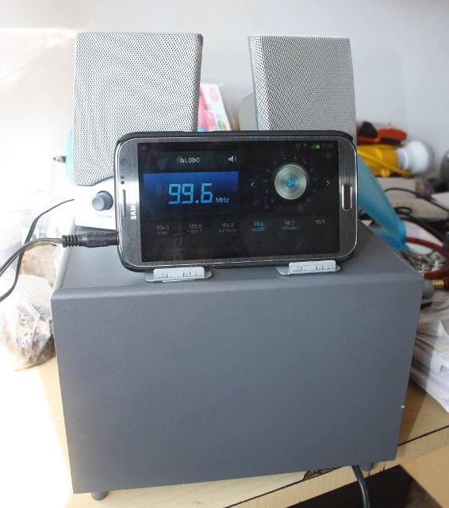
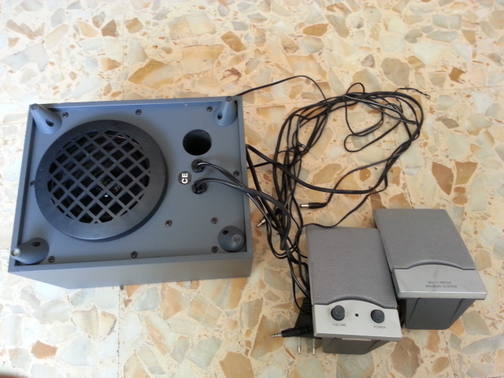
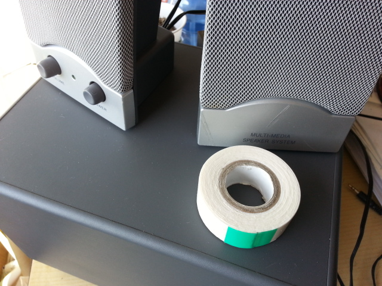
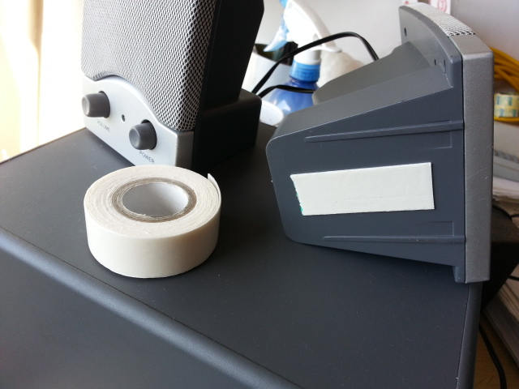
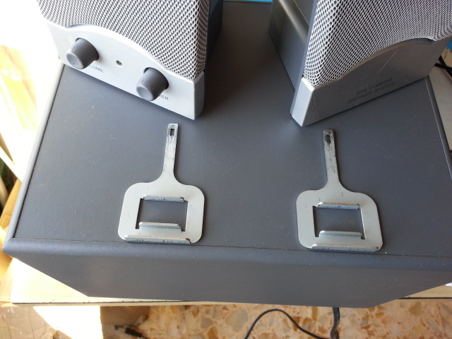

Dock station per cellulare Difficoltà: BASSA

Mi sono ritrovato un sistema per PC 2.1 funzionanti e non sapendo che farci ho deciso di trasformarli in una dock per cellulare. Con la funzione radio e lettore MP3 del cellulare è un valido sostituto alla radio tradizionale, con un consumo minore.
Cosa avevo a disposizione:
- Una cassa PC 2.1.
- Biadesivo.

La prima cosa da fare è "incollare" le due casse con un angolo di 45 gradi sul woofer, questo vi permette di non avere il suono diretto sul cellulare e poter usare i pulsanti di accensione e volume.


Ora bisogna creare dei supporti per il cellulare, va bene qualsiasi cosa come:
- Barra ad U.
- Due pezzi di legno uno davanti l'altro a formare un binario.
- Supporto per cellulari da auto.
- ETC etc.

Adesso sistemate i fili in modo che non diano intralcio, magari nascondendoli dietro il woofer, ricordate di lasciare lunghi il filo dell'alimentazione ed il filo dell'ingresso audio, che fungerà anche da antenna per la radio, quindi lasciatelo un po lungo.


Il risultato finale è il seguente:
Le vibrazioni del woofer potrebbero far cadere il vostro cellulare, più o meno costoso, quindi create dei supporti sufficienti per sostenere il cellulare in base alla potenza delle casse utilizzate.